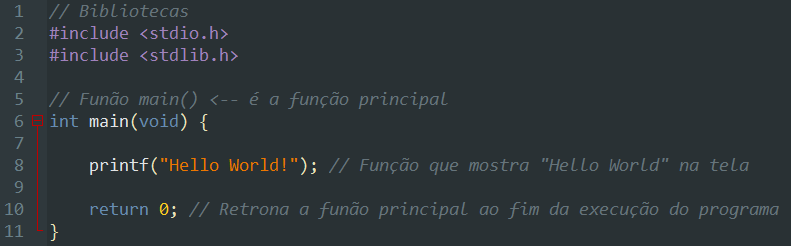

Linguagem de Programação C
O que é linguagem C?
A linguagem C foi criada por Dennis Ritchie nos laboratórios da Bell Telephone em 1972. C foi criado com um propósito: ser usado no desenvolvimento de uma nova versão do sistema operacional Unix. A primeira versão do Unix utilizava Assembly. Então podemos dizer que desde o principio C foi uma linguagem criada por programadores para programadores.
A linguagem C é considerada de propósito geral, ou seja é uma linguagem capaz de ser usada para praticamente qualquer tipo de projeto. É extremamente portável, ou seja um programa escrito em linguagem C pode ser facilmente usado em qualquer plataforma. Utilizando linguagem C podemos criar sistemas operacionais, aplicativos de todos os tipos, drivers e outros controladores de dispositivos, programar microcontroladores, etc.
Além de toda essa flexibilidade, C é capaz de gerar programas extremamente rápidos em tempo de execução, possui uma sintaxe simples e poderosa, com instruções de alto nível. A linguagem C influenciou de forma direta muitas linguagens como C++, Java, C# , Objective C, e muitas outras linguagens de programação tem sua sintaxe e estruturas influenciadas por C. C é uma linguagem extremamente popular e existem muitos compiladores C disponíveis para todas as plataformas.
C ANSI
A ANSI – American National Standards Institute foi a entidade encarregada de realizar a padronização da linguagem. Após a laboração do padrão este foi denominado de C ANSI. Este padrão foi revisto diversas vezes ao longo do tempo e posteriormente foi também reconhecido pela ISO, dando origem ao que chamamos de padrão ANSI/ISO C.
No início C e Unix estavam bem atrelados, pois cada nova implementação de Unix para um tipo de máquina, requeria um novo compilador C específico para essa máquina. Nos anos 80 a linguagem C tornou-se popular também fora do ambiente Unix. Nessa época surgiram novos compiladores comerciais de C e a linguagem passou a ser reconhecida como linguagem de propósito geral. Com o desenvolvimento de diversos compiladores, tornou-se necessário padronizar a linguagem, a fim de garantir a compatibilidade e a portabilidade da linguagem.
O que é C ANSI?
ANSI C , ISO C e Standard C são padrões sucessivos para a linguagem de programação C publicados pelo American National Standards Institute (ANSI) e ISO/IEC JTC 1/SC 22 /WG 14 da International Organization for Standardization (ISO) e pela Comissão Eletrotécnica Internacional (IEC). Historicamente, os nomes referiam-se especificamente à versão original e com melhor suporte do padrão (conhecida como C89 ou C90 ). Os desenvolvedores de software que escrevem em C são incentivados a seguir os padrões, pois isso ajuda na portabilidade entre compiladores.
Antes de apresentamos a sintaxe da Linguagem C, Vamos entender o que é um compilador (Programa que traduz a nossa linguagem para linguagem máquina). Que utilizaremos para testar se os programas que digitármos a máquina irá interpreta-los.
O que são compiladores?
Compiladores – A maneira de se comunicar com um computador chama-se programa e a única linguagem que o computador entende é a linguagem de máquina. Portanto, todos os programas que se comunicam com a máquina devem estar em linguagem de máquina. Os programas que fazem essa espécie de tradução são chamados compiladores. Um compilador lê a primeira instrução do programa, faz uma consistência de sua sintaxe e, se não houver erro, converte-a para linguagem de máquina; segue para a próxima instrução, repetindo o processo até que a última instrução seja atingida ou a consistência aponte algum erro.
Se não houver erros, o compilador cria um programa em disco com o sufixo OBJ, contendo as instruções já traduzidas. Este programa não pode ser executado até que sejam agregadas a ele as funções em linguagem de máquina que foram utilizadas no programa e estão em arquivos de bibliotecas. Este trabalho é feito por um programa chamado linkeditor, que, além de juntar as funções necessárias ao programa OBJ, cria um produto final em disco com o sufixo .EXE, o qual pode ser executado diretamente do sistema operacional. Um compilador não criará um programa em linguagem de máquina antes que esteja absolutamente livre de erros.
Fontes
- https://linguagemc.com.br/o-que-e-linguagem-c/
Livro: Treinamento em Liguagem C (2º Edição) Autora: Victorine Viviane
Comandos básicos em C
Agora que você saber um pouco mais sobre a linguagem de programação C e um pouco sobre o que significa a padronização C ANSI, vamos começar a falar sobre a estrutura básica de um programa C e depois sobre alguns comandos e codigos que pode ser utilizado no desenvolvimento do seu programa.
A Estrutura Básica de um Programa C
Um programa compõe-se de uma única função chamada main(), “main” em inglês significa principal. O nome de uma função pode ser qualquer um, com exceção de main(), reservado para a função que inicia a execução do programa. Em todo programa C deve existir uma única função chamada main(). Ela marca o ponto de partida do programa, que termina quando for encerrada a execução da função main(). Se um programa for constituído de uma única função, esta será main(). Exemplo:

Principais Funções na Linguagem C
| Função | Descrição |
|---|---|
printf() |
Escreve dados formatados na saída padrão (normalmente, a tela). |
scanf() |
Lê dados formatados da entrada padrão (normalmente, o teclado). |
fprintf() |
Escreve dados formatados em um arquivo. |
fscanf() |
Lê dados formatados de um arquivo. |
sprintf() |
Escreve dados formatados em uma string. |
sscanf() |
Lê dados formatados de uma string. |
fopen() |
Abre um arquivo. |
fclose() |
Fecha um arquivo. |
fgets() |
Lê uma linha de texto de um arquivo. |
fputc() |
Escreve um caractere em um arquivo. |
fgetC() |
Lê um caractere em um arquivo. |
rewind() |
Reposiciona o ponteiro de arquivo para o início de um arquivo. |
feof() |
Verifica se o fim de um arquivo foi alcançado. |
fseek() |
Reposiciona o ponteiro de arquivo para uma posição específica em um arquivo. |
ftell() |
Retorna a posição atual do ponteiro de arquivo. |
remove() |
Remove um arquivo do sistema de arquivos. |
rename() |
Renomeia um arquivo. |
Códigos especiais
| Código especial | Descrição |
|---|---|
+ |
Operador de adição. |
- |
Operador de subtração. |
* |
Operador de multiplicação. Dependendo da utilidade pode ser usado como operador de dereferência (valor apontado por) |
/ |
Operador de divisão. |
% |
Operador de módulo. |
= |
Operador de atribuição. |
== |
Operador de igualdade. |
!= |
Operador de desigualdade. |
< |
Operador menor que. |
> |
Operador de maior que. |
<= |
Operador maior ou igual a. |
>= |
Operador maior ou igual a. |
&& |
Operador lógico AND. |
! |
Operador lógico NOT. |
& |
Operador bit a bit AND. Dependendo da utilidade, pode servir como operador de referência (endereço de) |
^ |
Operador bit a bit XOR |
~ |
Operador bit a bit NOT |
<< |
Deslocamento de bits para a esquerda. |
>> |
Deslocamento de bits para a direita. |
, |
Operador de vírgula (usado para separar expressões). |
?: |
Operador ternário (condicional). |
# |
Caractere de pré-processador (para diretivas de pré-processador). |
\n |
Caractere de nova linha. |
\t |
Caractere de tabulação. |
\r |
Caractere de retorno. |
\\ |
Caractere de barra invertida. |
\' |
Caractere de apóstrofo. |
\" |
Caractere de aspas duplas. |
\0 |
Caractere nulo. |
Codigo de formatação para função prinf():
| Código de formatação | Descrição |
|---|---|
%c |
Caractere simples, ex: A, B, C, E, I, F... |
|
Inteiro decimal com sinal, ex: (0,1,2,3,-1,-2,-3). |
%e |
Notação científica (em minúsculo). |
%E |
Notação científica (em maiúsculo). |
%f |
Ponto flutuante em decimal, ex: 1.5, 2.5, 3.7, 2.3333333... |
%g |
Usa %e ou %f, o que for menor. |
%G |
Usa %e ou %f, o que for menor. |
%o |
Inteiro octal sem sinal. |
%s |
String de caracteres. |
%u |
Inteiro decimal sem sinal. |
%x |
Inteiro Hexadecimal sem sinal (Letras minúsculas). |
%X |
Inteiro Hexadecimal sem sinal (Letras maiúsculos). |
%p |
Ponteiro (endereço). |
%n |
Ponteiro inteiro. |
%% |
Imprime um caractere %. |
O que são variáveis?
Em termos simples, podemos dizer que são espaços de memória reservados para armazenar dados. Cada variável possui um nome único, que permite referenciá-la e acessar seu valor ao longo do programa. Algumas variáveis que você verá nesse curso:
| Tipo | Descrição |
|---|---|
char |
Armazena um caractere, por exemplo: '1', 'a', 'A', etc. |
int |
Armazena um valor numérico do tipo inteiro, por exemplo: 1, -1, 10, -100, etc. |
float |
Armazena um valor numérico de ponto flutuante, por exemplo: 1.55, -5.33, 10.7, etc. |
double |
Armazena um valor numérico de ponto fluntuante da mesma maneira que o float, mas o double é mais preciso, pois armazena mais números após o ponto |
Estrutura básica da linguagem C
Abaixo segue um código na linguagem C para printar o texto na tela “Hello World”.
